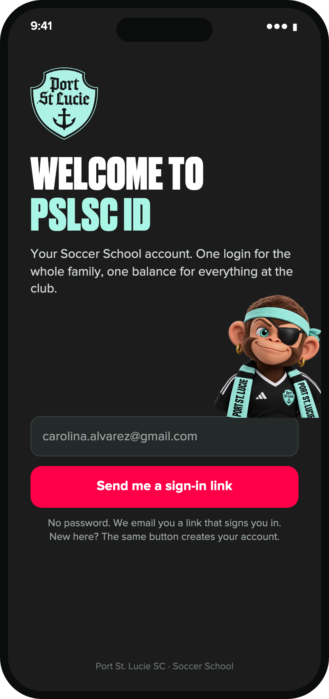
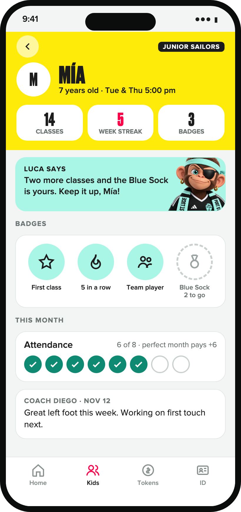
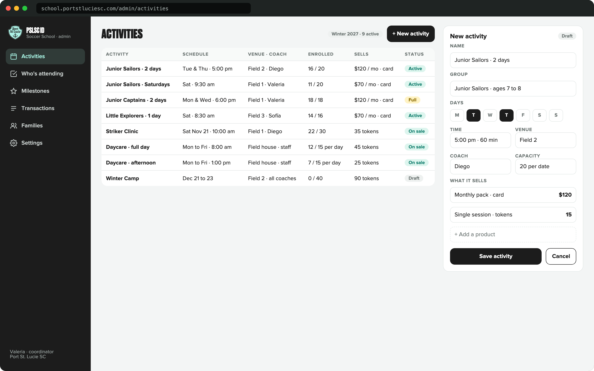
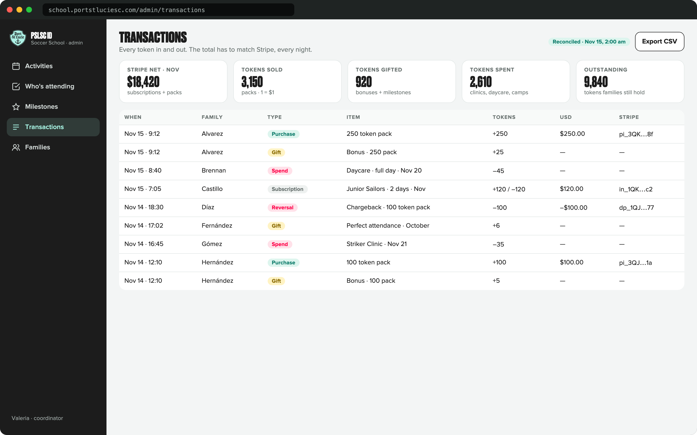
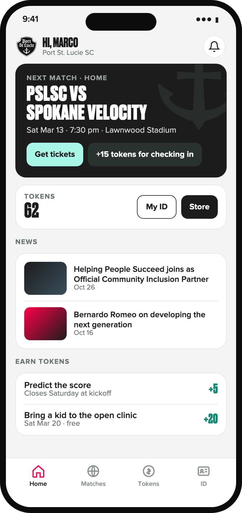
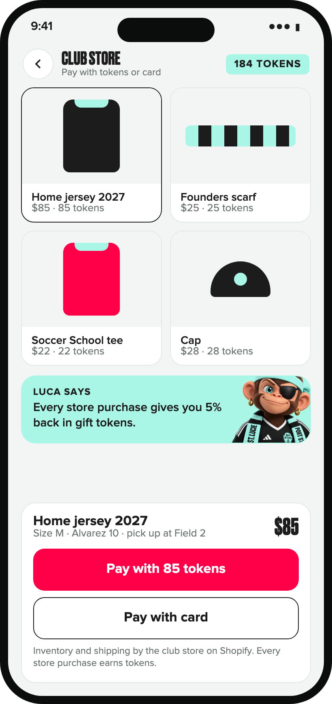
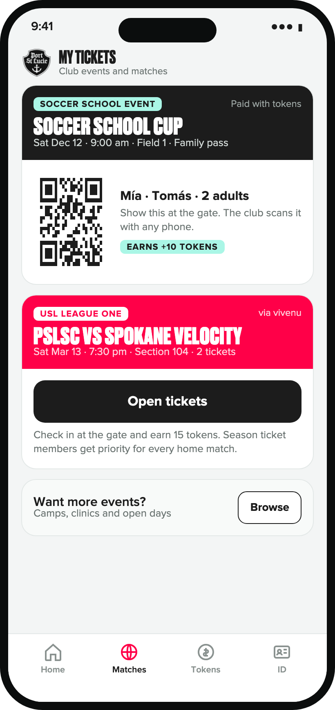

PSLSC ID
Port St. Lucie SC · Yacaré · Noviembre 2026
En octubre contamos la visión. Hoy la bajamos a tierra.
Aquel deck proponía una identidad, una economía de créditos y una relación continua con el club, empezando por la School.
Este es el análisis de producto que convierte esa visión en algo que se puede construir, medir y vender.
Tomamos las decisiones de octubre como punto de partida, no como límite. Donde el análisis nos llevó a otro lugar, lo decimos.
El análisis
Dónde está el club hoy, qué dice el mercado, a quién le hablamos y qué aprendimos de treinta productos.
Un club sin hinchas todavía, con familias desde el primer día.
- Una marca nueva, un personaje (Luca) y una ciudad que crece.
- Un primer equipo que debuta en USL League One en 2027.
- Un estadio de 6.000 localidades previsto para 2028.
- Una Soccer School para chicos de 5 a 13 años que empieza ahora.
- Una lista de familias preinscriptas.
- Un sistema con cuentas, datos y dinero: hoy no hay backend.
- Una base de clientes propia: las personas viven en una herramienta de email.
- Una tienda propia: el merchandising lo vende un tercero.
- Hábito: nadie usa nada del club todas las semanas, todavía.
- Hinchas con historia: el hincha de PSLSC se está formando.
Una ciudad que crece, padres que pagan y nadie que ofrezca fútbol mensual.
Creció Port St. Lucie en cinco años. La ciudad de más de 250.000 habitantes que más crece en EE. UU.
Hogares de la ciudad tiene chicos. Unos 26.700 chicos de 5 a 14 años en la ciudad, 40.000 en el condado.
De los padres demoró o salteó una inscripción por no poder pagar. El costo es el dolor número uno.
Dólares por mes que ya pagan por natación, gimnasia o artes marciales. Nadie ofrece fútbol mensual para 5 a 13.
Comunicación
La tecnología del club pesa para el 91 % de los padres y solo el 44 % está muy satisfecho. Un tercio pagaría más por mejores avisos e inscripción.
Seguridad
El 88 % quiere coaches con antecedentes verificados y uno de cada cuatro no sabe si el suyo los pasó.
Diversión
Los chicos juegan para divertirse y por los amigos. La edad promedio de abandono es 12,9 años: el techo de la School.
Una familia es cliente e hincha a la vez. Hoy ningún sistema sabe las dos cosas.
Carolina
Dos chicos, bilingüe, ya paga natación. Quiere saber cuándo, dónde y cuánto en un solo lugar, y pagar mes a mes sin sorpresas. Es quien abre la cuenta y a quien hay que convencer.
Mía, 7 y Tomás, 12
Mía recién empieza: si no se divierte, la familia no vuelve. Tomás está en la edad promedio de abandono: el producto tiene que preguntarle por qué antes de que se vaya.
Diego y Valeria
Coach y coordinadora. Lista del grupo en el teléfono, presentes en 30 segundos, packs cargados una vez, cero planillas. Si no lo usan, el producto no existe.
Marco, 35
El hincha del rediseño web: raíces latinas, un hijo que juega, ganas de creer. Entra por un partido o por la camiseta, con la misma cuenta.
Seis trabajos. Cuatro de la familia, dos del club.
Dos universos de software que no se tocan. PSLSC ID vive en el medio.
Operación de academia
PlayMetrics, SportsEngine, iClassPro, Upper Hand, 360Player. La familia paga, inscribe, firma. Nadie sabe si el padre va al estadio.
Loyalty de hinchas
FanMaker, CrowdPlay, Fortress, Socios. El adulto suma puntos por ir, compartir, votar. Nadie sabe que el hijo entrena los martes.
El hueco
Academia e hinchada en una sola cuenta, con una sola moneda, para un club mediano. Nadie lo hace. Fortress vende a ligas grandes; Spond, al club de barrio.
Los make-up tokens, el crédito más parecido en deporte infantil. Y familias que se inscriben solas.
Membresías que empaquetan sesiones, reglas de cancelación que las familias ya conocen, sesión inicial gratis.
Saldo prepago separado de los puntos. Una identidad que atraviesa todo y carga el gasto a la cuenta familiar.
Progresión visible y simple para chicos: rangos, rachas, insignias. El personaje como guía.
Seis correcciones de rumbo, con su porqué.
Pertenencia antes que puntos
En octubre el centro eran los créditos. El análisis dice que el centro es el carnet: la cuenta que te hace del club. Los tokens son la mecánica, no el producto.
La mensualidad va a la tarjeta
No a los créditos. Nadie debería tener que entender los tokens para pagar la School. Los tokens quedan para lo suelto, donde suman valor.
Tokens con tres razones para existir
Bono por prepago, cosas que solo se compran con tokens, regalos por hitos. Sin esas tres, un token es fricción. Con ellas, es un motivo para volver.
Gamificar al chico, no al gasto
La progresión es del hijo: clases, rachas, insignias, Luca. Los tokens caen en la cuenta del adulto. Premiamos hábitos, no compras.
La tienda antes que el estadio
La camiseta es el primer gesto de pertenencia, lo dijo el descubrimiento de junio. Con Shopify y tokens, la tienda es la segunda etapa, no la cuarta.
Web instalable ahora, app cuando haya hábito
La app nativa envuelve la misma web cuando haya razones para volver todos los días. Y los tokens nunca se venden adentro de la app, por las reglas de Apple.
Cinco riesgos de producto y cómo los diseñamos afuera.
La estrategia
Una tesis, seis principios, un posicionamiento y las métricas que nos van a decir si funciona.
La frecuencia la da la School. La escala la da el estadio. El puente es la tienda.
La School
Familias todas las semanas, cobro todos los meses, chicos que progresan. El hábito nace acá.
La tienda y el partido
La camiseta, las noticias, el primer equipo en la cancha. La familia de la School se vuelve hincha.
El estadio
Entradas, acceso, locales, comercios amigos. La misma cuenta, miles de personas, un día de partido.
Una familia es cliente de la School e hincha del club a la vez. PSLSC ID es el único lugar donde esas dos cosas son la misma cuenta.
Seis reglas que deciden cada pantalla.
Nadie necesita entender los tokens para comprar
La mensualidad va a la tarjeta. Lo suelto se paga con tokens o con tarjeta que se convierte al instante.
La cuenta es del adulto, el progreso es del chico
Un perfil por hijo, compras y asistencia por hijo. El chico ve su progreso desde la cuenta de su madre o su padre.
Todo lo que el club vende se compra con lo mismo
Una moneda, un saldo, un carnet. Hoy la School, mañana la tienda, después el estadio. Nada se rehace.
Lo que se regala cuesta poco y trae gente
Los tokens de regalo compran plazas con cupo libre. Lo que más paga es lo que trae plata o retención: el referido y la asistencia.
Cada etapa funciona sola
La School sin tienda ya sirve. La tienda sin estadio ya sirve. Ninguna etapa depende de la siguiente para dar valor.
El club es dueño de la relación y de la plata
Stripe cobra a nombre del club. Los datos son del club. Yacaré construye y opera, nunca retiene fondos.
Para la familia es la app de la School. Para el club es el carnet de todos.
No vendemos un programa de puntos. Vendemos una cuenta que te hace del club, que empieza siendo útil para algo concreto: la School de tus hijos.
"Your PSLSC ID. Your kids' school today. Your club, always."
En inglés para las familias, porque el producto se usa en inglés. En español como ventaja de cercanía: uno de cada cinco hogares de la ciudad habla español.
Una métrica norte y cinco que la explican.
Familias activas por mes: con mensualidad al día y al menos una sesión asistida. Si ese número crece, todo lo demás crece.
Mensualidades que se renuevan mes a mes. Objetivo: más del 90 % en el primer período.
Sesiones asistidas por familia por mes, marcadas por el coach. Es lo que alimenta la progresión.
Tokens gastados en clínicas y daycare por familia. Mide si los tokens tienen razón de ser.
Tasa de regalo sobre ingresos, entre 3 y 7 %. Referidos que pagan su primer mes.
El producto
Seis conceptos, un circuito, dieciséis pantallas. Lo que una familia y el club van a tener en la mano.
Seis conceptos y ninguno más.
Cuenta
El padre o la madre, con login por magic link. Es su PSLSC ID. Debajo, sus hijos: nombre, fecha de nacimiento, contacto de emergencia, notas médicas, consentimiento.
Token
La moneda del club. Un token vale un dólar, no vence y solo sirve en el club. Entra por Stripe o por hitos, sale por lo que el club vende.
Carga
La mensualidad de cada hijo, cobrada a la tarjeta como cualquier suscripción. Y packs de tokens para lo suelto, con bono en los grandes. Todo por Stripe, a nombre del club.
Actividad y SKU
La actividad es cuándo y dónde pasa: grupo por edad, día y hora, sede, coach, cupo por fecha. El SKU es lo que se vende para ella. Los crea el club desde su panel.
Compra y plaza
Un SKU para un hijo. Queda en el ledger y le da una plaza: el mes entero si es la mensualidad, una fecha si es una clínica o un día de daycare.
Hito
Algo que el hijo o la familia logra: asistió a todas las clases del mes, completó sus datos, trajo a otra familia. Da una insignia al hijo y tokens de regalo a la cuenta.
La mensualidad va a la tarjeta. Los tokens pagan lo suelto. Los hitos regalan.
Mensualidad de la School
Una suscripción por hijo, a la tarjeta, hasta que la das de baja. Anual con bono en tokens.
Packs de tokens
Compra única, sin compromiso. Los packs grandes bonifican más.
Tokens de regalo
Por hitos y bonos. El club elige cuáles pagan y cuánto.
Un saldo por familia
- 1 token = 1 USD, siempre
- Nada vence
- Dos registros internos: cargados y de regalo. Se gastan primero los de regalo
- Cada movimiento queda en el ledger
- Sin cash-out, sin transferencias
Hoy: lo de la School
Clínicas, sesiones sueltas, eventos exclusivos, un día o una tarde de daycare.
2027: la tienda y los partidos
La camiseta en Shopify, entradas a eventos propios, después vivenu.
2028: el estadio
Locales, comercios amigos, acceso con el carnet.
De preinscripta a primer canje, en ocho pasos.
Entra desde la School
Email, link mágico, listo. Carga a sus hijos con sus datos y consentimientos.
Elige el pack de cada hijo
Ve los packs de la categoría de cada uno: días, horario, sede, coach, cupos, precio mensual.
Paga el mes con la tarjeta
Un solo paso. Se cobra cada mes; puede cancelar cuando quiera para el ciclo siguiente.
Recibe confirmación
Email con el recibo y las próximas fechas. El hijo ya tiene plaza y aparece en la lista del coach.
Carga tokens para lo suelto
Un pack de tokens con bono. Elige una clínica o un día de daycare en el calendario, para un hijo.
El coach marca presente
Cada clase suma a la racha y al progreso del hijo. Luca lo celebra en la cuenta de la familia.
Gana tokens por hitos
Mes de asistencia perfecta, perfil completo, una familia referida que paga. Los tokens caen en el saldo.
Vuelve a canjear
Una clínica, un evento solo para socios, pronto la camiseta. Y muestra su carnet con QR donde haga falta.
Cinco pantallas y cero planillas.
La coordinadora crea las actividades una vez. Los cobros entran solos. El coach abre una lista en el teléfono y marca presentes en 30 segundos.
Todo lo que hoy se resuelve por WhatsApp y Excel queda en un lugar, con contacto de emergencia y notas médicas a mano.
Tres frentes sobre un solo núcleo. Línea llena hoy, punteado después.
La familia entra por la web de PSLSC ID, el staff por el panel, el comercio por una página de validación. Todo pasa por una API sobre Supabase; Stripe cobra a nombre del club; el sitio de la USL solo enlaza. vivenu, la tienda y el estadio se conectan después, sobre lo mismo.
No inventamos pantallas. Tomamos las que ya funcionan y les ponemos el escudo.
El wallet, de Starbucks
Saldo grande con "cargar" debajo, el QR en la mitad baja de la pantalla, montos sugeridos al recargar y recarga automática con dos campos: cuando baje de tanto, cargar tanto.
La racha, de Duolingo
Una llama, un calendario con tildes, la racha en riesgo avisada antes de romperse y las notificaciones firmadas por el personaje. Sin leaderboards para menores de 13.
Las medias, de Techne
Niveles como medias de color, de la blanca a la negra, ganadas por horas entrenadas. Es el patrón más directo para Luca y la progresión de un chico de la School.
El botón Scan, de Charlotte FC
Un botón central que paga y suma puntos en un solo gesto, y una recompensa diaria para reclamar. El QR del carnet es a la vez identidad, check-in y medio de pago.
El código que rota, de Ticketmaster
El QR cambia cada pocos segundos y la captura de pantalla no sirve. Estados con nombre cuando algo falla. Y un pase de Wallet con el código legible debajo.
El check-in, de iClassPro
Un tilde por chico, "todos presentes" y ajuste individual, marcas de llegó tarde o se fue antes, y permisos por coach: cada uno ve solo sus clases. Si hay una duda de pago, el chico entra igual y se marca para revisar.
Entrar, ver a los hijos, ver cómo progresan.



Pantallas ilustrativas en inglés, el idioma del producto. Los rangos de edad son de ejemplo hasta que el club los defina.
Elegir un pack, pagar el mes, cargar tokens.


Gastar tokens, ver el saldo, mostrar el carnet.


Crear actividades y saber quién viene.


Decidir qué se regala y que la caja cierre.


El chico progresa. La familia gana. El club decide cuánto.
| Hito | Tokens | Cuándo |
|---|---|---|
| Completar el perfil y los hijos | 10 | Una vez |
| Primer mes pagado | 10 | Una vez |
| Asistencia perfecta en el mes | 5 % del pack | Por mes |
| Referir a una familia que paga su primer mes | 25 y 25 al nuevo | Hasta tres por año |
| Encuesta de fin de período | 5 | Por período |
| Pack mediano y grande, anual | 5 %, 10 %, un mes | Al cargar |
Cuatro reglas, tres razones para existir y lo que nunca van a ser.
- Un token vale un dólar, siempre.
- No vencen, ni los cargados ni los de regalo.
- Se compran con tarjeta, en la web, por Stripe.
- Sirven para todo lo del club y para nada más.
- Bono por prepago. Cargar más, o pagar el año, da tokens de regalo.
- Cosas que solo se compran con tokens. Eventos exclusivos, clínicas con el primer equipo.
- Regalos por hitos. Asistir, completar, referir. Un saldo que crece solo.
- No se cambian por dinero.
- No se pasan de una cuenta a otra. Regalar es cargar a nombre de otra familia.
- No compran nada digital. Insignias, progreso y Luca son gratis.
- No son cripto. Son un saldo del club, con reglas de Florida y de FinCEN a validar con un abogado.
La misma cuenta sirve para el hincha.



Cada sistema externo se conecta en tres niveles: enlaces, identidad, wallet.
Shopify
Nivel 1: enlace y códigos de descuento pagados con tokens. Nivel 2: la vidriera adentro de PSLSC ID, con órdenes pagadas con tokens creadas por API. Nivel 3: tokens por cada compra. Shopify queda como inventario y despacho.
vivenu
El ticketing oficial de la USL desde marzo de 2026. Primero cupones emitidos por nosotros; con acceso a la API, compra desde la app y tokens por asistir. El acceso se pide a través de la liga.
El sitio del club
Corre en el WordPress de la USL y solo puede enlazar. Pero sus noticias y eventos ya salen por API pública: están en la app en días.
ActiveCampaign y Stripe
ActiveCampaign sigue como CRM: los preinscriptos entran, los contactos y eventos salen. Stripe Connect cobra todo a nombre del club; Yacaré nunca retiene fondos.
Comercios amigos, sin integrar nada
El club carga el beneficio. La familia muestra su QR. El comercio lo escanea con cualquier teléfono y ve "válido" en una página nuestra. El descuento lo hace en su caja; nosotros registramos el uso.
El estadio, en 2028
Ticketing, tienda y punto de venta se eligen con un criterio: que acepten identidad y wallet de PSLSC ID por API. Si se eligen proveedores cerrados, el ecosistema se frena ahí.
El negocio
Cinco palancas, los supuestos con fuente, una proyección a tres años y lo que cuesta operarlo.
Cinco palancas, en el orden en que llegan.
Ingreso recurrente que se cobra solo
La mensualidad por hijo es una suscripción. Sin cobrar a mano, sin morosidad escondida en planillas, con el precio del mes a la vista. Es la base: predecible y creciente.
Caja anticipada y más frecuencia
Los packs de tokens y el anual se cobran antes de usarse. Un saldo cargado pide ser gastado: clínicas, daycare, eventos. El club vende lo suelto sin volver a pedir la tarjeta.
Datos propios
Quién viene, a qué, cada cuánto, cuánto gasta, a quién trajo. Hoy el club no tiene ninguno de esos números. Con ellos se decide qué abrir, qué cerrar y a quién hablarle.
La tienda y las entradas, sobre la misma cuenta
Desde 2027, la camiseta y las entradas a eventos se compran con el mismo saldo. Cada familia de la School es un comprador de merchandising con la tarjeta ya cargada.
El estadio, con la relación ya hecha
En 2028 el club llega al estadio con cientos de familias con cuenta, carnet y saldo, y con hábito. Entradas, locales y comercios amigos arrancan sobre una comunidad, no desde cero.
Cada número de la proyección tiene una fuente o está marcado como estimación.
| Variable | Valor base | De dónde sale |
|---|---|---|
| Mensualidad por chico | US$ 120 | Banda de US$ 80 a 150 de la oferta local; las familias ya pagan 119 a 175 por natación o gimnasia |
| Chicos por coach | 10 | Canada Soccer y US Soccer: ideal 8, máximo 12 entre 8 y 13 años |
| Coach, por hora de sesión | US$ 25 | Avisos en Florida, 20 a 26 por hora |
| Cancha municipal con luces, por hora | US$ 30 | Port St. Lucie 20,28 más luces 8,64; Palm Beach 25. Cero desde 2028 en campos propios |
| Semanas operativas por año | 42 | Estimación propia |
| Retención anual de familias | 75 % | Sprocket 2023, clubes U8 a U13: 74 a 78 % |
| Procesamiento de tarjeta | 3,15 % | Stripe, 2,9 % más 30 centavos sobre US$ 120 |
| Presupuesto de tokens de regalo | 3 % | Programas de consumo devuelven entre 1 y 6 %; Starbucks y Dunkin' cerca del 6 |
| Saldo cargado que nunca se usa | 1,5 % | Starbucks, balance 2025: 222 millones sobre 15.246 diferidos. No se cuenta como ingreso el primer año |
| Asistencia promedio, estreno del estadio | 3.300 | FC Naples año 1: 3.488 en 5.000 plazas; promedio de la liga 2026: 3.008 |
| Entrada ponderada y abono | US$ 14 y US$ 200 | Abonos de la liga a 10 a 15 por partido en general; hasta 65 premium |
| Comida y bebida por asistente | US$ 12 | Estimación propia, entre 8 y 15; único dato publicado: 14 en ligas menores |
Un grupo de diez chicos deja más de la mitad de lo que factura. Y hay espacio para treinta grupos.
| Diez chicos a US$ 120 | US$ 1.200 |
| Coach: dos sesiones por semana | -US$ 193 |
| Cancha alquilada, hasta 2027 | -US$ 231 |
| Margen directo con cancha alquilada | 65 % |
| Margen directo en campos propios, desde 2028 | 84 % |
| 2027 | 2028 | 2029 | |
|---|---|---|---|
| Chicos activos, promedio | 115 | 220 | 300 |
| Familias | 88 | 169 | 231 |
| Mensualidades | 138 | 317 | 432 |
| Clínicas y daycare con tokens | 11 | 24 | 33 |
| Coaches y cancha | -49 | -51 | -69 |
| Margen directo de la School | 100 | 290 | 396 |
2027 son diez meses desde marzo, arrancando con unos 60 chicos preinscriptos y sumando doce por mes. 2028 y 2029 asumen retención del 75 % y crecimiento con el primer equipo y el estadio. Un extra de US$ 40 por mes en tres de cada diez familias.
La plataforma cuesta menos del 1 % de lo que cobra. Lo que pesa es Stripe y el regalo, y los dos tienen tope.
| Por año, en dólares | 2027 | 2028 | 2029 | Qué es |
|---|---|---|---|---|
| Infraestructura | US$ 750 | US$ 1.200 | US$ 1.560 | Supabase, Vercel, email, dominio. Crece con las familias, no con las ventas. |
| Shopify, tienda y punto de venta | US$ 234 | US$ 2.328 | US$ 2.328 | Basic desde julio de 2027; Grow y un POS en el estadio desde 2028. |
| Apple, Google, dominio | US$ 135 | US$ 110 | US$ 110 | Cuentas a nombre del club. |
| Procesamiento de tarjeta, 3,15 % | US$ 4.933 | US$ 12.322 | US$ 16.545 | Sobre mensualidades, tokens y tienda. Las entradas de vivenu van aparte. |
| Tokens de regalo, tope del 3 % | US$ 4.458 | US$ 10.235 | US$ 13.957 | Contado a valor nominal. En la práctica cuesta menos: compra plazas con cupo libre y una parte no se canjea. |
| Total sobre lo que pasa por PSLSC ID | 6,7 % | 6,7 % | 6,6 % | Sin contar las horas de construcción y acompañamiento de Yacaré, que están en la Parte 05. |
Con anuncios cuesta unos US$ 80 por familia. Un referido cuesta 50 tokens entre las dos familias, y solo se paga si la nueva paga su primer mes.
Alrededor del 1,5 % del saldo cargado nunca se gasta, como en Starbucks. No lo contamos como ingreso hasta tener un año de historial.
Coordinación, seguros, equipamiento y marketing del club. Son costos de la School, con o sin PSLSC ID.
Casi sesenta mil personas por temporada. PSLSC ID no vende las entradas: hace que cada una valga más.
Asistentes por temporada: 3.300 de promedio en 18 fechas de local, el año del estreno.
Dólares en entradas a US$ 14 de promedio ponderado. Las cobra vivenu.
Dólares en comida y bebida a US$ 12 por persona. Estimación propia; la parte del club depende del concesionario.
Dólares en merchandising a US$ 2 por asistente, como en las ligas menores de béisbol.
- Cuatro de cada diez entradas vinculadas a una cuenta: US$ 332.640 en entradas con nombre y apellido.
- Un 15 % de la comida y bebida pagada con tokens: US$ 106.920.
- Cuatro de cada diez compras de merchandising con el carnet: US$ 47.520.
- Quién vino, cuántas veces y cuánto gastó. Hoy el club no va a saber nada de eso.
- Tokens por asistir, que traen al hincha al partido siguiente. Los estadios cashless reportan subas de gasto por persona de dos dígitos; no lo contamos hasta medirlo.
- Las familias de la School llegan al estadio con cuenta, saldo y hábito. El segundo año de FC Naples cayó un 28 %: la retención es el problema que PSLSC ID viene a resolver.
Lo que el club mira cada mes, etapa por etapa.
- 80 % de los preinscriptos con cuenta a 30 días
- Cobro automático exitoso mayor al 95 %
- Presentes marcados en más del 90 % de las sesiones
- Tasa de regalo entre 3 y 7 %
- Menos de cinco pedidos de soporte por semana
- Retención mensual de la School mayor al 90 %
- 30 % de las familias compra un extra con tokens por mes
- Cuentas de hinchas sin hijos en la School
- Órdenes de la tienda pagadas con tokens
- Apertura de notificaciones mayor al 40 %
- Instalaciones de la app sobre cuentas activas
- Opt-in de notificaciones
- Beneficios usados en comercios amigos por mes
- Hinchas que suman tokens por asistir
- Referidos que pagan su primer mes
- Entradas vinculadas a una cuenta
- Gasto por persona con y sin PSLSC ID
- Tokens canjeados en locales
- Abonados que renuevan
- Familias de la School que van al partido
Ocho principios que mantienen a los tokens simples y dentro de la ley.
Son nuestra lectura de las normas de Florida y de FinCEN, no asesoramiento. Proponemos validarlos con un abogado de pagos de Florida antes de abrir ventas.
Mientras los tokens solo se gasten en el club, no se cambien por plata y no se transfieran, son un certificado prepago, no dinero.
- Circuito cerrado: solo se canjean por lo que el club vende o entrega.
- Lo cargado no vence ni tiene fees. Lo de regalo, tampoco.
- Tope de saldo por familia, propuesto en 1.500 dólares, por debajo del límite federal.
- Sin cash-out. Solo devolución de la compra original, por error.
- Sin transferencias entre cuentas.
- Regalar es cargar tokens a nombre de otra familia.
- Lo no canjeado queda en el club.
- Yacaré nunca tiene la plata: Stripe cobra a nombre del club.
Las etapas
Cuatro etapas con fechas, alcance, horas, equipo y riesgos. Cada una funciona sola y deja la base de la siguiente.
De la School al estadio en cuatro etapas.
Rangos de edad, precios y packs, fecha de apertura, Stripe del club, abogado. Arranca la base técnica.
La School funciona: cuenta, hijos, mensualidad, tokens, clínicas y daycare, check-in, progreso, carnet. Piloto en marzo y apertura.
La School a fondo y la cara de hincha: noticias, partidos, tienda con tokens, entradas propias, bilingüe, push.
La app en las tiendas, pase de Wallet, comercios amigos en piloto, vivenu conectado, reglas legales cerradas.
El estadio: entradas y abonos, acceso con el carnet, locales que cobran en tokens, comercios operativos.
Siete sprints de dos semanas. Cada uno termina con algo que se puede mostrar.
| Sprint | Fechas | Qué se construye | Qué se muestra al final |
|---|---|---|---|
| 0 · Preparación | 23 nov a 4 dic | Base técnica, pantallas finales, textos. El club entrega rangos de edad, precios, packs y fecha. | Entornos funcionando, pantallas aprobadas. |
| 1 · Cuenta e hijos | 7 a 18 dic | Magic link, hogar, hijos con consentimientos, dashboard vacío. | Una familia crea su cuenta y carga a sus hijos desde el teléfono. |
| 2 · Wallet y packs | 21 dic a 8 ene | Ledger, packs con Stripe, webhook, bonos. Fiestas en el medio. | Comprar un pack y ver subir el saldo. |
| 3 · Actividades y compra | 11 a 22 ene | Actividades con fechas y cupo, catálogo por hijo, compra con tokens, quiénes asisten. | Comprar una clínica para un hijo y verlo en la lista del club. |
| 4 · Mensualidad | 25 ene a 5 feb | Suscripción por hijo, plaza, cobro fallido, gracia, baja, anual. | Inscribir a un hijo y ver el cobro automático en Stripe. |
| 5 · Check-in y progreso | 8 a 19 feb | Presentes desde el teléfono, hitos con topes, insignias, racha, Luca. | El coach marca presentes; el hijo gana una insignia y la familia, tokens. |
| 6 · Carnet y cierre | 22 feb a 5 mar | Mi PSLSC ID con QR, movimientos, conciliación, QA. | El circuito completo, conciliado contra Stripe. |
| Piloto cerrado | 8 a 19 mar | 10 a 20 familias preinscriptas, una actividad real, ajustes. | Métricas del piloto. |
| Apertura | Semana del 22 mar | Importación de preinscriptos, email de apertura. | La School abre en PSLSC ID. |
Qué entra en cada etapa y qué queda afuera a propósito.
La School funciona
- Cuenta del adulto, un perfil por hijo
- Mensualidad a la tarjeta, por hijo
- Tokens, packs con bono, clínicas y daycare
- Actividades, cupos, quiénes asisten
- Check-in, hitos, insignias, racha, Luca
- Carnet con QR, panel del club, conciliación
A fondo y la cara de hincha
- Eventos exclusivos, make-up, lista de espera
- Comunicación al grupo, reportes, bilingüe
- Noticias y partidos del sitio por API
- Home que se ordena según quién sos
- Tienda Shopify: códigos, después vidriera con tokens
- Entradas a eventos propios con QR
La app y el club conectado
- App en App Store y Google Play sobre la misma web
- Push nativo, cámara, pase de Wallet
- Comercios amigos en piloto con dos comercios
- vivenu por cupones y, con acceso, por API
- Leaderboards con nombre e inicial
- Consulta legal cerrada
El estadio
- vivenu a fondo: abonos, asientos, entradas en el wallet
- Acceso con el carnet
- Punto de venta con identidad y wallet por API
- Locales y comercios con liquidación
- Matchday: estacionamiento, mapa, menús
Un equipo chico de Yacaré, IT del club como revisor y la coordinadora como dueña de la operación.
| Etapa | Horas | Con 80 h/mes | Con 120 h/mes |
|---|---|---|---|
| 1 | 330 | Apertura 22 de marzo | Apertura 1 de marzo |
| 2 | 390 | Hasta fines de agosto | Hasta mediados de julio |
| 3 | 310 | Agosto a noviembre | Tres meses |
| 4 | 340 | Según el calendario del estadio y los proveedores | |
Los ocho riesgos que importan y qué hacemos con cada uno.
| Riesgo | Mitigación |
|---|---|
| La School abre antes de que la plataforma esté lista | Puente con enlaces de pago de Stripe y un formulario, en dos o tres días. Las suscripciones ya quedan creadas y se vinculan al abrir. |
| 80 horas por mes no alcanzan para marzo | Decidir en diciembre si se amplía a 120. Lo que no entre cae en Etapa 2, no en el medio. |
| Apple rechaza la app por los tokens | Web instalable primero. En la app los tokens se cargan en la web y nunca compran nada digital; lo físico se cobra con Stripe adentro, como exige Apple. |
| Sin acceso a la API de vivenu | Pedirlo a través de la USL desde la Etapa 1. Mientras tanto, cupones y enlaces. |
| El plan de Shopify limita la integración | Elegir el plan con la integración en mente. La vidriera va dentro de PSLSC ID con órdenes por API; no dependemos de Multipass. |
| El daycare requiere licencia de child care en Florida | Consulta legal antes de venderlo. Si hace falta, se vende como programa recreativo o se posterga. |
| Cobros recurrentes fallidos | Reintentos de Stripe, aviso con link para actualizar la tarjeta, gracia corta, baja automática. Meta: menos del 5 % de fallos. |
| Los coaches no marcan presentes | Check-in de un toque, lista de respaldo, capacitación de 20 minutos y la coordinadora ve qué sesiones quedaron sin marcar. |
Decir que no también es diseño de producto.
Cada una de estas cosas apareció en el camino. Las sacamos por una razón concreta, no por falta de ganas.
Lo que queda afuera es lo que mantiene simple todo lo demás.
- Streaming y resultados en vivo. Los da la USL. Nosotros enlazamos.
- Red social o chat. La moderación no vale la pena. El muro del groundbreaking vive en su micrositio.
- Cobrar en tokens en la caja de un comercio. Sin un partner con licencia, en Florida es transmisión de dinero.
- Cuentas para menores de 13. La cuenta es del adulto; el chico es un perfil.
- Criptomonedas. Los tokens son un saldo del club, no un activo. Nada en blockchain.
- Transferencias y cash-out. Regalar es cargar tokens a nombre de otra familia. Nunca de una cuenta a otra ni a dinero.
Siete decisiones para arrancar el 23 de noviembre.
Yacaré analiza, recomienda, diseña y construye. Las decisiones de negocio son del club, y estas siete destraban la Etapa 1.
Con esto cerrado, la School abre en PSLSC ID en marzo.
- Rangos de edad por categoría.
- Fecha de apertura de la School y dónde se entrena.
- Packs y precios del primer período, descuento por hermanos, bono por prepago.
- Qué hitos regalan tokens y cuánto. Nuestra propuesta está en la Parte 03.
- Dónde y cuándo juega el primer equipo en 2027.
- Quién administra la tienda en Shopify y qué plan contrata.
- Un abogado de pagos en Florida para validar tokens y daycare.
Y una decisión de ritmo: con 80 horas por mes la School abre el 22 de marzo; con 120, el 1 de marzo y la cara de hincha llega con la temporada.
Let's build PSLSC ID.
La cuenta del club. Para la School hoy, para todo el club mañana.
¿Tenés alguna duda sobre PSLSC ID?
Preguntale lo que quieras al asistente. Tiene acceso al contenido completo de esta presentación.
Este asistente responde exclusivamente sobre el contenido de esta presentación. Puede cometer errores. Para consultas formales, escribí a contact@yacare.io.